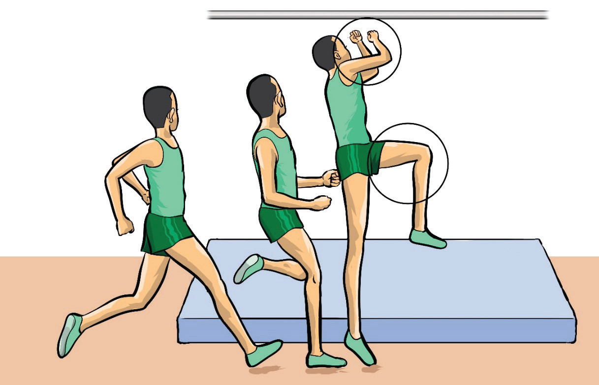

path and ensure a safe landing. It should be near the middle of the crossbar for proper height and clearance. Follow these steps for a successful take-off:
(i)
Position the take-off foot correctly by placing it on the designated take-off mark, pointing toward the landing area, as shown in Figure 2.37;
(ii)
Ensure proper foot placement on first contact: The take-off foot should land 2-3 foot lengths ahead of the hips and trunk, forming a 20 – 40-degree angle with the crossbar;
(iii)
Lean away from the crossbar: Push the free leg forcefully upward while positioning your body in a “six o’clock” posture (legs down, upper body upright);
(iv)
Stretch your arms upward: Keep your head upright while fully extending the take-off leg and foot;
(v)
Drive the non-take-off leg high: Raise the thigh to a horizontal position while swinging the arms upward to head level; and
(vi)
Extend the body into vertical alignment: Ensure the lower body follows naturally into a fully extended take-off position for maximum height and stability.

a
b
c